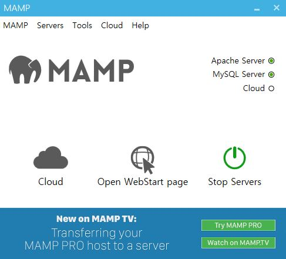

MySQL
MySQL은 데이터베이스 소프트웨어입니다. 일반적으로 데이터를 추가하거나 검색, 추출하는 기능을 모두 포함해서 데이터베이스라고 부릅니다.
"MySQL은 세계에서 가장 많이 쓰이는 오픈 소스의 관계형 데이터베이스 관리 시스템(RDBMS)입니다. MySQL은 PHP 스크립트 언어와 상호 연동이 잘 되면서 오픈소스로 개발된 무료 프로그램입니다. 그래서 홈페이지나 쇼핑몰(워드프레스, cafe24, 제로보드, 그누보드) 등 일반적으로 웹 개발에 널리 사용하고 있습니다."
MySQL 설치
MAMP 설치
MAMP 실행
윈도우 : C:\> cd MAMP/bin/mysql/bin
윈도우 : mysql -uroot -proot
윈도우 : mysql -uroot -proot
C:\MAMP\bin\mysql\bin>mysql -uroot -proot
mysql: [Warning] Using a password on the command line interface can be insecure.
Welcome to the MySQL monitor. Commands end with ; or \g.
Your MySQL connection id is 4
Server version: 5.7.24 MySQL Community Server (GPL)
Copyright (c) 2000, 2018, Oracle and/or its affiliates. All rights reserved.
Oracle is a registered trademark of Oracle Corporation and/or its
affiliates. Other names may be trademarks of their respective
owners.
Type 'help;' or '\h' for help. Type '\c' to clear the current input statement.
맥 : cd /Application/mamp/Library/bin
맥 : sudo mysql -uroot -proot
맥 : sudo mysql -uroot -proot
webstoryboyhwang@Webstoryboyui-MacBookPro bin % sudo ./mysql -uroot -p
Enter password:
Welcome to the MySQL monitor. Commands end with ; or \g.
Your MySQL connection id is 383
Server version: 5.7.32 MySQL Community Server (GPL)
Copyright (c) 2000, 2020, Oracle and/or its affiliates. All rights reserved.
Oracle is a registered trademark of Oracle Corporation and/or its
affiliates. Other names may be trademarks of their respective
owners.
Type 'help;' or '\h' for help. Type '\c' to clear the current input statement.
데이터베이스
데이터베이스 만들기
CREATE DATABASE 데이터베이스 이름;
mysql> CREATE DATABASE test01;
Query OK, 1 row affected (0.00 sec)
데이터베이스 보기
SHOW DATABASES;
mysql> SHOW DATABASES;
+--------------------+
| Database |
+--------------------+
| information_schema |
| mysql |
| performance_schema |
| sys |
| test01 |
+--------------------+
5 rows in set (0.00 sec)
데이터베이스 사용
USE 데이터베이스 이름;
mysql> USE test01;
Database changed
데이터베이스 삭제
DROP DATABASE 삭제할 데이터베이스 이름
mysql> DROP DATABASE test01;
Query OK, 0 rows affected (0.00 sec)
테이블
테이블 만들기
CREATE TABLE 테이블 이름;
mysql> CREATE TABLE myMember (
-> myMemberID int(10) unsigned auto_increment comment "회원 고유번호",
-> youEmail varchar(40) NOT NULL comment "회원 아이디",
-> youName varchar(12) NOT NULL comment "회원 이름",
-> youPass varchar(20) NOT NULL comment "회원 비밀번호",
-> youBirth varchar(11) NOT NULL comment "회원 생일",
-> regTime int(11) NOT NULL comment "회원가입 시간",
-> PRIMARY KEY (myMemberID))
-> charset=utf8 comment = "회원 정보 테이블";
Query OK, 0 rows affected (0.05 sec)
테이블 전체 보기
SHOW TABLES;
mysql> SHOW TABLES;
+------------------+
| Tables_in_test01 |
+------------------+
| mymember |
+------------------+
1 row in set (0.00 sec)
테이블 보기
DESC 테이블 이름;
mysql> DESC myMember;
+------------+------------------+------+-----+---------+----------------+
| Field | Type | Null | Key | Default | Extra |
+------------+------------------+------+-----+---------+----------------+
| myMemberID | int(10) unsigned | NO | PRI | NULL | auto_increment |
| youEmail | varchar(40) | NO | | NULL | |
| youName | varchar(12) | NO | | NULL | |
| youPass | varchar(20) | NO | | NULL | |
| youBirth | varchar(11) | NO | | NULL | |
| regTime | int(11) | NO | | NULL | |
+------------+------------------+------+-----+---------+----------------+
6 rows in set (0.00 sec)
테이블 삭제
DROP TABLE 테이블 이름;
mysql> DROP TABLE myMember;
Query OK, 0 rows affected (0.01 sec)
테이블 수정
필드 추가
ALTER TABLE 테이블명 ADD 추가할 필드명 AFTER 필드 위치;
mysql> ALTER TABLE myMember2 ADD youAge int(3) NOT NULL comment "회원 나이" AFTER youBirth;
Query OK, 0 rows affected (0.06 sec)
mysql> ALTER TABLE myMember2 ADD youPhone int(8) NOT NULL comment "회원 연락처" AFTER youAge;
Query OK, 0 rows affected (0.05 sec)
mysql> ALTER TABLE myMember2 ADD youGender enum('m','w','x') default "x" comment "남성 m, 여성 w" AFTER youPhone;
Query OK, 0 rows affected (0.05 sec)
필드 수정
ALTER TABLE 테이블명 MODIFY 수정할 필드명;
mysql> ALTER TABLE myMember2 MODIFY youGender enum('m','w');
Query OK, 0 rows affected (0.06 sec)
필드 삭제
DROP TABLE 테이블명 DROP 삭제할 필드명;
mysql> ALTER TABLE myMember2 DROP youAge;
Query OK, 0 rows affected (0.06 sec)
테이블 데이터
데이터 입력하기
데이터 뷸러오기
데이터 수정하기
데이터 삭제하기